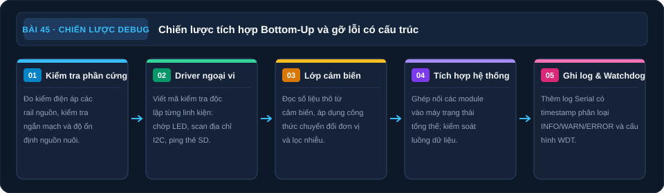

Đồ Án — Phát Triển Firmware & Debug
Test từng module độc lập trước khi tích hợp — kỹ thuật debug Serial, oscilloscope và bottom-up integration.
- Áp dụng Bottom-Up Integration — test từng module riêng biệt trước
- Kỹ thuật Serial Debug có cấu trúc — prefix [INFO], [WARN], [ERROR]
- Viết test harness đơn giản cho từng chức năng
- Kỹ thuật debug phần cứng: oscilloscope đo timing, multimeter check nguồn
- Xử lý các lỗi phổ biến: I2C không tìm thấy, WiFi không kết nối, SD không mount
- Watchdog Timer — phòng ngừa hệ thống bị treo
- Heap memory monitoring — phát hiện memory leak trên ESP32
1. Bottom-Up Integration — Tích hợp từ dưới lên
1. Phần cứng: tắt nguồn khi kiểm dây; sau đó cấp nguồn có giới hạn dòng và đo rail VCC/GND theo thiết kế. Kiểm địa chỉ thiết bị I²C bằng scanner và thử GPIO với tải phù hợp.
2. Driver: thử riêng từng cảm biến, RTC và giao tiếp thẻ SD; OLED hiển thị mẫu chữ. Ghi đầu vào, kết quả mong đợi và kết quả thực tế.
3. Logic: thử kết nối/ngắt WiFi, từng chuyển trạng thái của state machine và thời điểm chạy scheduler.
4. Tích hợp: ghép hai module một lần, kiểm các giao diện và nguồn chung, rồi kiểm luồng từ cảm biến đến đầu ra của toàn hệ thống.

Mô tả sơ đồ bằng chữ
Mô hình 5 tầng tích hợp: Tầng 1 kiểm tra phần cứng và đo điện áp nguồn; Tầng 2 viết mã kiểm tra độc lập từng ngoại vi GPIO, I2C, SPI; Tầng 3 xây dựng lớp thu thập và lọc dữ liệu cảm biến; Tầng 4 ghép nối vào máy trạng thái điều khiển toàn cục; Tầng 5 thêm log Serial có timestamp phân loại lỗi và cấu hình Watchdog Timer chống treo vi điều khiển.
2. Serial Debug có cấu trúc
// Debug macro — chỉ in khi DEBUG_SERIAL = true
#define DEBUG_SERIAL true
#define LOG_INFO(msg, ...) if(DEBUG_SERIAL) Serial.printf("[INFO] " msg "\n", ##__VA_ARGS__)
#define LOG_WARN(msg, ...) if(DEBUG_SERIAL) Serial.printf("[WARN] " msg "\n", ##__VA_ARGS__)
#define LOG_ERR(msg, ...) Serial.printf("[ERROR] " msg "\n", ##__VA_ARGS__) // Luôn in lỗi
// Ví dụ sử dụng:
LOG_INFO("BME280 init OK. Temp=%.1f Humi=%.1f", temp, humi);
LOG_WARN("WiFi reconnecting attempt %d", attempt);
LOG_ERR("SD card mount failed! Check CS pin = %d", CS_PIN);
// Output mẫu:
// [INFO] BME280 init OK. Temp=27.3 Humi=65.2
// [WARN] WiFi reconnecting attempt 3
// [ERROR] SD card mount failed! Check CS pin = 5
3. Watchdog Timer — Phòng ngừa hệ thống treo
// ESP32 Hardware Watchdog Timer
#include "esp_task_wdt.h"
#define WDT_TIMEOUT_S 10 // Reset sau 10s nếu không được feed
void setup() {
esp_task_wdt_init(WDT_TIMEOUT_S, true); // Bật WDT, panic=true
esp_task_wdt_add(NULL); // Monitor task hiện tại
}
void loop() {
esp_task_wdt_reset(); // "Feed" watchdog — gọi mỗi loop iteration
// Nếu có blocking code (network timeout...) bật WDT sẽ auto reset
// sau WDT_TIMEOUT_S giây — hệ thống tự phục hồi
}
4. Lỗi phổ biến khi tích hợp — và cách debug
| Triệu chứng | Nguyên nhân phổ biến | Debug |
|---|---|---|
| I2C Scanner: 0x00 không tìm thấy | Thiếu pull-up 4,7kΩ hoặc SAI địa chỉ | Đo V(SDA), V(SCL) = 3,3V idle. Kiểm tra A0,A1 pin địa chỉ |
| WiFi kết nối timeout lặp lại | SSID/pass sai, router phải bật WPA2 (không WPA3) | WiFi.scanNetworks() — xem SSID có hiện không |
| SD.begin() trả về false | CS pin sai, SPI conflict với thiết bị khác, card FAT32 | Format thẻ FAT32, kiểm tra CS pin đúng, thử tháo thiết bị SPI khác |
| ESP32 restart liên tục | Stack overflow, memory leak, WDT, watchdog không được feed | Serial.println(ESP.getResetReason()) — xem nguyên nhân restart |
| Sensor đọc NaN hoặc 0 | Sai thư viện, sai địa chỉ I2C, nhiệt độ khởi động chưa ổn định | Thêm delay(500) sau init, retry 3 lần, kiểm tra loại cảm biến |
3: Heap giảm dần liên tục = memory leak. Nguyên nhân phổ biến: (a) String concatenation trong loop: String s = ""; s += "data"; — mỗi lần tạo String mới trên heap, không giải phóng đúng cách → dùng char buf[] thay thế; (b) JSON library không gọi .clear() sau dùng; (c) HTTP Client không gọi .end() sau request; (d) malloc/new không free. Dùng ESP.getFreeHeap() trước và sau mỗi function để tìm function nào gây leak.